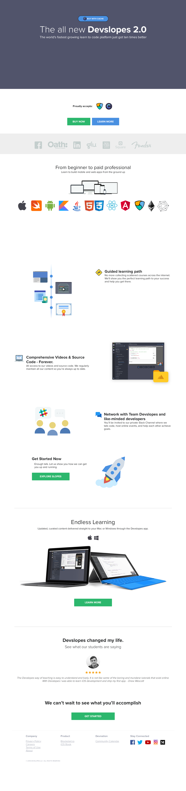
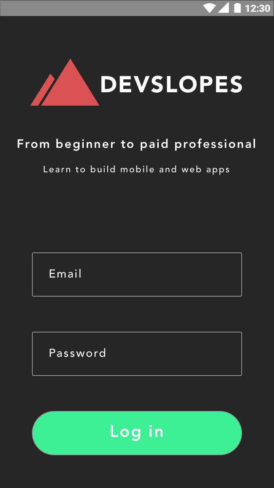
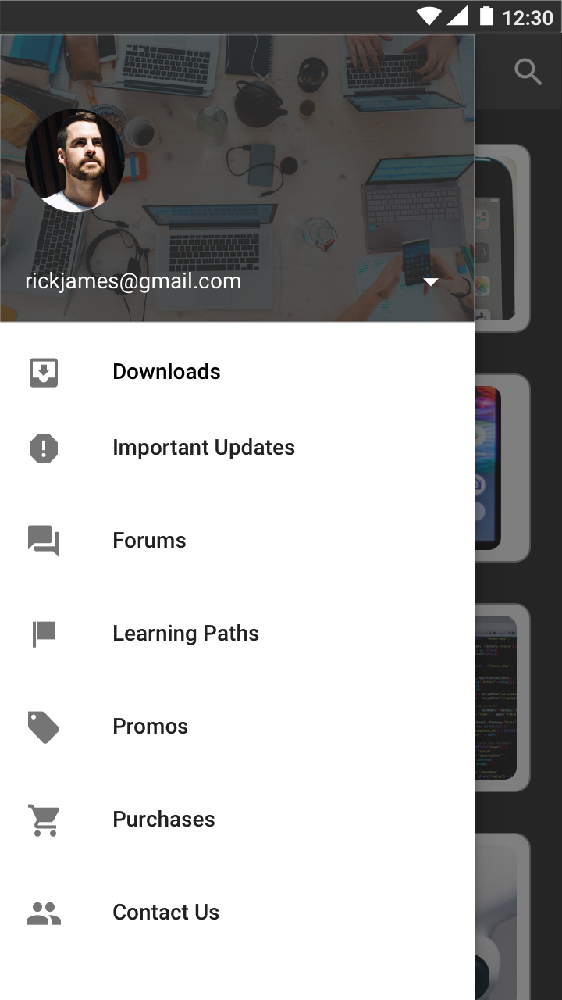
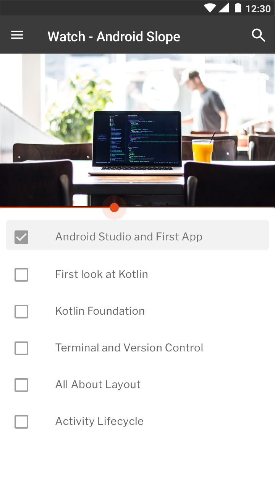
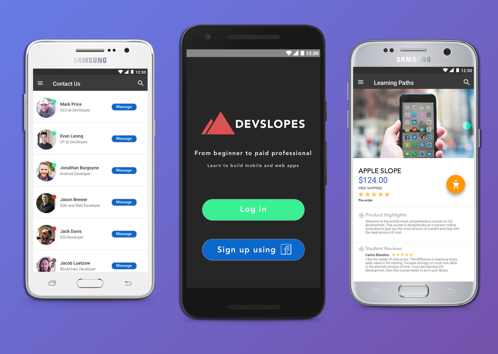

DEVSLOPES APP REDESIGN
Introduction
Devslopes is a platform created by Mark Price, a veteran mobile developer having built over 57 mobile apps for iOS and Android and a professional engineering instructor. The goal was to people to code and empower them to innovate and obtain jobs in the tech industry. Initially, Devslopes offered courses in mobile app development for the Android and iOS platforms on Udemy.
Recently, Devslopes had migrated from Udemy to their own platform, in the form of a web app, with the second iteration of the product. This allowed for courses in more domains as well as guided learning paths — called “Slopes”. The arrival of Devslopes 2.0 brought Game Development and Blockchain Training, along with advancements in Apple, Android and Web Development.
As I had taken their courses on Udemy, I have to thank the community for helping me learn iOS Development and Web Development. I knew that I had to give back, in one way or another. That was when I had noticed that there was no mobile app for students to enroll themselves in the new courses and learn to code.
I took this as my problem statement and looked at ways in which I could design a product, here — in the form of a mobile application — from scratch.

Initial Explorations
Devslopes is a platform created by Mark Price, a veteran mobile developer having built over 57 mobile apps for iOS and Android and a professional engineering instructor. The goal was to people to code and empower them to innovate and obtain jobs in the tech industry. Initially, Devslopes offered courses in mobile app development for the Android and iOS platforms on Udemy.

Wireframing
Devslopes is a platform created by Mark Price, a veteran mobile developer having built over 57 mobile apps for iOS and Android and a professional engineering instructor. The goal was to people to code and empower them to innovate and obtain jobs in the tech industry. Initially, Devslopes offered courses in mobile app development for the Android and iOS platforms on Udemy.

Prototyping
Devslopes is a platform created by Mark Price, a veteran mobile developer having built over 57 mobile apps for iOS and Android and a professional engineering instructor. The goal was to people to code and empower them to innovate and obtain jobs in the tech industry. Initially, Devslopes offered courses in mobile app development for the Android and iOS platforms on Udemy.







